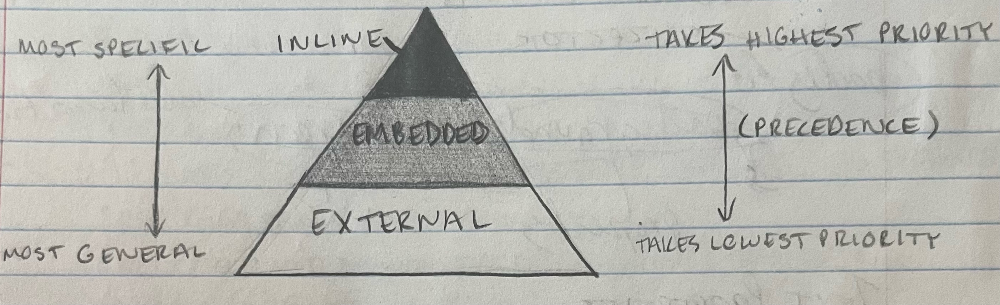

CSS Overview
CSS stands for Cascading Style Sheets, and it is a way to style your websites. It uses different style rules or rule sets to change various elements. There are three main ways to use CSS, as explained below.
Inline Style
This involves using additional HTML code to add styles to your webpage. It is typically used when there is just one little change you want to make. For example, I used inline style CSS in the HTML page in this website to change the colors of the headings when talking about how to map a website. Visually, using inline style would look like this: <p style = "color: red" > Special </p> and would create this result:
Special
Embedded Style Sheet
An embedded style sheet means including a portion of a stylesheet, written in CSS, within your HTML code for the webpage. I have never specifically used this myself, but I imagine this would be helpful when you just have a couple specific changes that you want applied to the whole document. When using an embedded style sheet, the style sheet is placed within the head of the document. I believe this is just convention, and I'm not sure whether the placement of the stylesheet affects things. You use the <style> tag to show that you are including a style sheet, as shown below. This set of rules would mean that every h1 element within the document would be red.
<head>
<style>
h1 {
color: red
}
</style>
</head>
External Style Sheet
An external style sheet is one that you write separately, in CSS, and then link inside the HTML document. This is helpful when you have a lot of rule sets that you want to include, or when you have rule sets affecting several different types of elements. It is also, in my understanding, quite a common practice just as a way to stay organized. It is helpful to have all of your rule sets in one place where they can be easily grouped, tracked, and manipulated depending on the needs of the website. You link a stylesheet by using a link element as follows: <link rel = "stylesheet" href = "styles.css">. A link element has no closing tag.
Precedence
The "Cascading" in Cascading Style Sheets comes from the hierarchy of style rules it employs, also called precedence or priority. There are two ways to look at this hierarchy. First, by considering the breadth of the different forms of style rule sets. Secondly, you can look at the priority itself that is given to each style.
Imagine a pyramid with the highest and smallest section being labeled "Inline", the middle section being labeled "Embedded", and the lowest and largest section being labeled "External".
On the one hand, you can look at this pyramid and see a hierarchy of size. The smallest section of the pyramid is the inline section. This is because using inline CSS means that your rule sets are the most specific. The external section is the largest because using an external style sheet means that your rule sets are the least specific and most broad. What this means is that the different ways of using CSS impact the breadth of control that your rule sets have. You can style more elements using an external style sheet, just because the nature of an external style sheet is such that you can change and control what you want to happen to each element. In an inline style sheet, it is more specific because it usually applies to one or two elements and usually only does one or two things. Basically, an external style sheet gives you more general control over the whole document while inline CSS is used to make very a couple very specific changes. Remember, inline rule sets mean that you're using the style attribute within some other element. The reason that I even said this can apply to one or two elements instead of just one is that the span tag can be used to make sure that a specific style is applied to all elements within the span element. Theoretically, you could use the span element on a very large portion of the document, even the whole main section. However, using it to style more than a couple elements at a time kind of indicates that maybe you should just use an embedded style sheet, because it is kind of clumsy coding imo.
Anyway, there is also another way to look at this hierarchy, as previously mentioned. Instead of looking at the size of the various sections, you can also look at the height of the sections. Inline CSS may be the smallest/most specific section, but it also the highest up on the pyramid. This is because inline style rule sets have the highest priority. External style sheets have the lowest priority. This means that the document will use the rule sets in an external style sheet, but if any rule sets are contradicted by an embedded style sheet, it will use those and overrule the external style sheet. Similarly, if any inline style rules are applied, these will be applied regardless of any external or internal style sheets. So if you had a rule within an external style sheet that said all paragraph elements have white bold text, but a rule in an embedded style sheet said that main paragraph elements have green size 14 text, and a rule in the inline style sheet said that this specific paragraph element had size 8 text, you would be looking at this: paragraph element.
CSS Rule Sets
A rule set describes the style change for some HTML elements. A rule set has a selector (the element that you want the rule to apply to), brackets {}, and a declaration within the brackets. A declaration is made up of the property (the style attribute you want to control) as well as a value (the exact thing you want it to be). Examples of a selector are body, h1, nav li a, etc. Examples of a declaration are background-color: green;, font-size: small;, etc. In these cases, the properties are background-color and font-size, while the values are green and small.
Example Declarations
- font-family: Verdana, Arial, sans-serif
- font-size: 50 px or 50% or 50pt etc
- font-weight: bold or normal or lighter etc
- font-style: italic or normal or oblique etc
- text-align: center or left or right
- color: red or tomato or rgb(120, 171, 161, 0.65) or #afe179
notes: the font-family stuff is kind of confusing to me, you list them like that so that if the first one you listed isn't available, it will proceed to the next one. you should end the list with one of the five generic fonts: serif, sans-serif, monospace, cursive and fantasy.
also, there is a lot of stuff that goes into colors. First of all, "color" means the color of the font and "background-color" and etc refer to other elements' colors. also, there are multiple ways to pick a color. this includes by a CSS-recognized name, of which there are 140. you can also use rgb and rgba numbers to find a specific combination of colors. rgb refers to the red, green, blue values within the color, and rgba introduces an opacity setting that moves between, i believe, 0 and 1. you can also use hex codes, which are alphanumeric combinations that result in a color being found from a base-16 system.
there are some special selectors, such as div id (a div with the id "id" can be called using #id {) and classes (eg all elements with a "class" class can be called with .class {). for a more comprehensive list, check out this link. use commas between selectors to choose multiple and spaces between selectors to choose subgroups within the first selector (parent > child).
Block vs Inline
inline: elements can be on the same line
- <a>
- <img>
block: elements start and end with a new line
- <p>
- <h1>, <h2>, <h3>, etc...
- <ol>, <ul>, <li>
- <header>, <nav>, etc...
Additionally, you can use height and width properties to change the dimensions of block elements!
Borders
A border is an outline that separates the margin and padding of a block element. Some declarations related to a border include:
- border-style: solid/dotted/dashed/none/double/etc
- border-color:
- border-width: 8px/10%/5em/etc
- border-radius: 16px/5%/etc (makes your border rounded instead of rectangular!!!)
You can also use border-left-style or similar properties to only change one side or part of the border as opposed to the whole border all the way around the content.
Margin and Padding
margin: passive space between block and edge of page
padding: passive space between border and content
So basically, if you were to have a paragraph element with a border around it, the margin would be the space between the border and the edge of the page, and the padding woule be the space between the border and the actual text.
When you want to edit the margin or padding of a webpage, you can use the property margin: or padding: respectively to edit the margin or padding on all sides of the content. You can also specify which side or part of the margin/padding you want to change, such as by using margin-top: or padding-left:.
Units
- px = pixels
- em = ephemeral unit (1 em = default font size)
- % = percent of parent element (so if you're looking at an h1 element within the header, setting its height to 100% will not take up the whole screen, just the whole header)
Float and Clear
Float is a property that allows you to move an element to the left or right of another element instead of having everything stay stacked on top of each other. It is my bestie ever, except it is also evil and complicated about everything.
Clear is the property that cancels the effects of float on another element.
Auto is a value that tells the computer to balance clear and float and basically figure it out itself.
Changing Lists
list-style-type: changes the bullets or numbering. You can pick shapes for the bullets, like circle/square /etc or pick between numbering systems such as upper-roman/lower-alpha
list-style-position: inside/outside changes the bullet alignment if your text runs over to the next line. Inside means that the text aligns with the bullet itself, so the bullets fall in between lines of text. Outside means that the text instead aligns with the text on the line above so that the bullets stick out between aligned lines of text.
list-style-image: changes bullets to an image using url(' ') as the value
Responsive Design
When making a website, you have to remember that people will view it on different devices with different screen sizes. Responsive design is a way of making sure that your website can resize itself to accomodate different sizes of screens and browser windows. You can do this by having elements set to auto sizing or to percentage based sizing. It is okay if some elements have a fixed size if you really want to make sure that something is always exactly 300px or whatever, but aside from that you should really make sure your values are not fixed.You can use CSS properties like max-width to make sure that an element never takes up more than, say, 5% of the main or nav or whatever.
The traditional approach to responsive design was to begin with a desktop-appropriate website and then change it to work for smaller screens. There is even a way to make a separate website for mobile as opposed to adapting your current website. In this approach, the mobile site has the same address but with https://m. in front of everything else. But as cellphones have gained popularity, it has become more common to utilize a mobile-first approach in which website are first developed for phones and then sized up for larger devices.
In addition to fixed layouts (where elements have a set/specific size that does not change), there are also fluid layouts where elements adjust to fit the size of the viewport. A fixed layout typically uses pixels while a fluid layout more often uses percentage. The em unit is technically also relative/fluid as it adjusts to the size of the default font size, which can change with browsers and etc.
In responsive design, the critical concept is that smaller viewports should have access to less information and a more simple website, while larger viewports have access to more information and things like images or sidebars that you may not want to use for smaller viewports. Additionally, mobile websites/smaller viewports should be navigating differently than websites for larger viewports. Usually, a mobile website should just have the ABSOLUTE MOST important info on the home page, and then should have a little hamburger or other navigation tool to take you to various pages with more specific info and more details.
The tag used to implement responsive design is <meta name = "viewport" content = "width-device-width, initial-scale = 1.0">. This tag has a name attribute (name = "viewport") to tell the computer that this tag relates to viewports/responsive design. It also has a content attribute so that it can get the width value and the initial-scale value to specify the width of the device as well as the level to which the webpage should be 'zoomed in'. This prevents the situation where you open a website on a phone and see the normal desktop website, just very zoomed out, so that you don't have to scroll around to read stuff.
CSS Reset
A CSS Reset sets all of your default vaues for things like padding and margin to 0 so that you can start from a clean slate, so to speak, and better control and resize your website. It also can be used to make sure your website looks the same on every screen.
Sticky Elements
Sticky elements are always visible on a screen, even when a user scrolls down. Here's what that looks like:
position: sticky;
top: 0; (so it stays right at the very top of the page)
position: -webkit-sticky;
(some browsers - in this case safari - require their own specific bullshit)
background-color: whatever;
(specify this or it will become transparent and overlap with other elements)
Font Principles
- text should always be legible
- three or less fonts
- pair serif and sans-serif fonts
In case you have for some strange reason forgotten, a serif font has the embellishments and a sans-serif does not
Classes and Pseudoclasses
Pseudoclasses are used to reference a group or type of element. It isn't the same as the class attribute, so they're not a real class that is defined by the programmer. An example of a psuedoclass being called in the stylesheet is nav li:first-child: which is use to reference the psuedoclass of the first item in lists throughout the document.
In responsive design, you may have some elements that you really only want seen by one device type or another. You can use the class attribute to mark something as 'mobile' or 'tablet-desktop' so that you can go back in the stylesheet and hide mobile elements when the viewport is larger than however many pixels and hide tablet-desktop elements when the viewport is smaller than however many pixels. This way, only one class is visible at a time so that your page is easily accessed by different viewports.
Additionally, there is another attribute called "id". This is not the same as a class attribute. The class attribute groups multiple elements while the id attribute is a unique identifier of one specific element. You can reference classes in your selectors by using a period in front of the class name, such as .headings. You can reference an id in your selectors by using a hashtag/pound sign, such as #emphasized-p.
Media Query
A media query asks the display for media type and browser characteristics such as the window size and orientation. There are a couple types of media queries.
Our first type of media query selects a CSS file and is located in the head of the HTML document. Here is an example of what this type of media query would look like if you were to create three separate stylesheets according to device type and screen width:
<link rel = "stylesheet" href = "css/styles-mobile.css" media = "screen and (max-width:480px)">
<link rel = "stylesheet" href = "css/styles-tablet.css" media = "screen and (min-width: 481px)">
<link rel = "stylesheet" href = "css/styles-desktop.css" media = "screen and (min-width: 769px)">
please note that you can also use multiple media features such as both a min and max width. please also note that in the above example, "screen" creates a reference that the stylesheet will look back on when deciding what rule sets do and don't apply. i think technically screen is a class or something but i'm not fully certain
Here is an example of a media query that selects within the CSS rule sets:
@media screen and (max-width: 480px) { //nav -> horizontal and centered for mobile }
This example only selects for a mobile screen smaller than 481px because it is assuming that the default is to have the nav bar vertical and to the side, which it applies to both tablet and desktop screens greater than 480px. This is therefore an example of a traditional approach to responsive design, where the website is first built for larger screens and is then adapted to smaller ones. A mobile-first approach would probably have a min-width selector instead so that the default is whatever the mobile situation is while anything larger gets its own set of rules.
There are also ultra-wide monitors such as projector screens and gaming monitors. Sometimes, you want to select for these specifically so that you can increase the margin size so that there is space on the left and right sides of the screen rather than stretching the website too far and making it hard to read. You could also probably increase the font size or something just to make it a little easier to read on such a large screen.
You can also select for printing so that your document formats itself for printing, such as by removing pointless images and decorations, and by removing colors so you don't wasste ink and etc and etc. Here's an example of a media query for printing:
@ media print { body { background-color: white; color: black; } }
Dynamic Pseudoclasses
Dynamic pseudoclasses are groups of elements that change based in some criteria. Examples incude:
- :link -> unvisisited links
- :visited -> visited links
- :hover -> when you're actively hovering over a link
- :active -> the moment a link is clicked
You can style these so that certain affects occur based on what is happening to the link!